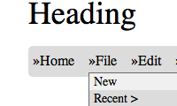
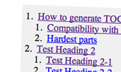
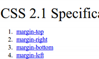
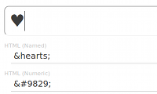

Some tryouts
つくってみたものをちょこちょこ公開。Chromium・Firefox・Opera の最新版で大体問題なかったら載せる感じで。早く世の中が HTML 5 と CSS 3 と ECMAScript 5.1 で満たされたらいいと思う。
-
 404 Not Found
404 Not Found
- とりあえず作った。セロハンテープ作るの楽しかった。
-
 Picasa-like Wallpaper
Picasa-like Wallpaper
- jQuery らしく書き直して、ズーム機能復活。
-  CSS Dropdown Menu
- 汎用的に作るの難しい...
-  jQuery TOC Generator
- こうゆうの苦手です...
-  CSS Property Order
- 本家に追い付くべくスクリプト化もした。
-  HTML Entities Converter
- HTML エンティティお気楽変換!
- First Step to Fancy Web
- Processing.js でシャレオツ!
-
Horizontal Scroller
- jQuery プラグイン形式で横スクロールの実現など。
-
Work in progress
- 鋭意製作中! 的な。